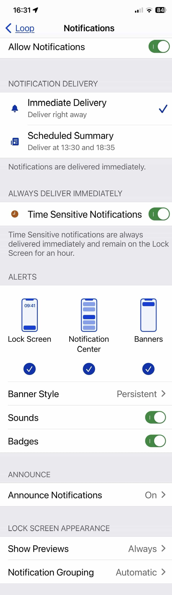

Loop Notifications
Loop Notifications¶
Loop provides discrete notifications on the iPhone and Watch which will appear on the (locked) screen and vibrate, depending on your notification settings of Loop.
Loop Alert - Unable to Reach Pump¶
With Loop 3, there is a new modal alert that halts all Loop activity until pump communication can be restored.

When you tap on the Learn More button, another screen appears. The only option allowed on the second screen is to give up and discard the pump (or pod) or continue to wait - tap the Back button. The second screen is there if you need to tell Loop you will not be able to restore communication and it should treat the last attempt to send a command as uncertain. Loop will then allow you to add a new pod or new Medtronic pump or switch to a different insulin delivery device.
Only do this if bringing your phone and pump into close proximity, waiting a few minutes and then trying the Reset Loop-to-Pump Communications suggestions are not successful.
Why Stop all Activity?
When communication is interrupted at a critical moment in the communication cycle, Loop cannot provide a reliable calculation for IOB. When that happens a warning screen similar to the graphic above appears on your device. You cannot do anything but wait for Loop to restore communications or give up on that device.
Loop App Expiration Notification¶
Profile expiration notification was added with Loop 2.2.5.

- When fewer than 20 days remain until profile expiration, you'll get a notification when you open the app but no more frequently than every 2 days
- When fewer than 24 hours remain, you'll get a notification when you open the app, once every hour at most
- Simply tap on the
More Infobutton of the notification to go directly to the LoopDocs Updating page.
Free (7-day) Loop App Expiration Notification¶
The expiration notification pattern is the same as for the Paid Loop App. You may want to add an Expiration Notification Customization to modify the first appearance and frequency of the notification.
Loop App Expiration Date¶
For Loop 3.2.x and newer versions¶
The expiration date is found in the App Profile section at the bottom of the Loop Settings screen.
For Loop 2.2.5 through Loop 3.0¶
If you want to see the expiration date at any time:
- Loop 2.2.5 through 2.2.9: tap on Settings, then tap on Issue Report
- Loop 3.x.x: tap on Settings, scroll down and tap on Support, then tap on Issue Report
The expiration date is near the top of the report (to the right of profileExpiration). If you don't see that, time to rebuild to get that feature. Once you've viewed the expiration date, tap Settings to back out of the Issue Report display. The time uses UTC, so adjust to your time zone if you procrastinated until the last minute.

Omnipod Beeps¶
Most pod beep alarms are disabled for a more discrete use of pods than is available with the PDM. Only the following audible acknowledgments or alarms are used. Some can be configured in Omnipod: Notification Settings:
- Pod activated acknowledgment when filling the pod with enough insulin when pairing a new Pod.
- Pod expiration advisory alarm, which you can configure between 48 and 72 hours (3 days)
- Pod low reservoir alert
- Note that the pod may continue delivering after the reservoir reports 0 U
- The pod will continue until the pod runs out of insulin or 4 U is delivered, which ever comes first
- Loop will update the actual delivery amounts based on pod reported information
- Pod deactivation acknowledgment
- Pod fault alarm (also called a screamer) when reaching the max life of the Pod: 80 hours (3 days + 8 hours), running out of insulin or a fault/occlusion happens
- Screamers are silenced using the Replace Pod row on the pod settings page
- The one exception is if communications with the pod is lost and cannot be restored - in that case, you will be offered the chance to discard the pod from Loop but will still want to Silence the Pod
Notification settings for Loop¶
You can customize the way notifications of Loop are behaving in the Settings App of the iPhone:

Loop 3 Notifications Settings:

Mark Loop 3 notifications as time-sensitive and ask for immediate delivery:
- tick the
Immediate Deliveryso that notifications are delivered right away - enable the
TimeSensistive Notificationscheckbox
Notification Delivery
You will see the Notification Delivery section only if you previously toggled on Settings / Notifications / Scheduled Summary in order to receive a summary of notifications at a certain time of the day. If this is not what you want, simply ignore it.
Announce Notifications
The Announce Notifications section is displayed only if you previously turned on the toggle Settings / Notifications / Announce Notifications. Use it if you want Siri to read Loop's notifications out loud on CarPlay, and AirPods...
Make sure Loop notifications are allowed in your Focus mode. Edit the focus mode to:
- add
Loopto the list of apps with allowed notifications - enable the
Time Sensitive Notificationstoggle button
Taking a Loop Break¶
If you want to take a break from using Loop but want to keep the app on your phone, you'll want to disable Loop Notifications while you are not using Loop. Otherwise, the Loop Failure messages will drive you crazy.
When you are ready to resume using Loop, the main screen will remind you to turn those notifications back on.
Another time you might want to disable notifications is if you are testing with a simulated pump. When the app is closed or phone is locked, the simulated pump is inactive and you would get the Loop Failure notifications.
Loop Failure¶
At 20, 40, 60, and 120 minutes, there is a Loop Failure notification. This mostly happens when the connection is lost for a longer period of time between the CGM or the Rileylink and Loop.

Bolus Failure¶
If Loop detects that a bolus was not able to be delivered, it will provide a notification. Bolus failures are usually due to stale pump data. Try fetching recent history from the RileyLink menu to update pump data. Loop will also notify of partial bolus deliveries.

Low Reservoir¶
Medtronic
At 20% and 10% remaining reservoir volume, there is a Low Reservoir notification.
Omnipod
Select your desired notification level for low reservoir
Omnipod: Notification Settings

Empty Reservoir¶
- Loop 2 will notify when the reservoir is empty.

- Loop 3 reports No Insulin on the Heads-Up-Display.

Omnipod After the reservoir reports 0 U, the pod attempts to deliver insulin when requested.
- After 4 U are delivered, the pod alarms and must be changed
- If during the attempt to deliver the 4 U (below zero), the pod runs out of insulin, the pod alarms and must be changed
- In both cases, the pod reports it is out-of-insulin
Low Battery (Medtronic)¶
Loop will notify when battery levels have approximately 8-10 hours of battery life remaining.
Remote Notifications¶
Loop does not have a remote notification to other devices. If you are a remotely monitoring parent, you will want to read here about setting up pushover alerts using your Nightscout site if you want proactive notifications of looping related information.
Loop Follow¶
Many people use additional apps to assist in following a loved one or to support a loved one who needs help waking up to alarms. One of the more popular options is Loop Follow, written by a parent of a Looper. There are a number of features to assist in remote monitoring with a variety of options for the source of data.

For more information, please read the Loop Follow documentation. You can build Loop Follow using the same Build Select Script you used to build the Loop app or using the GitHub Browser Build Method.